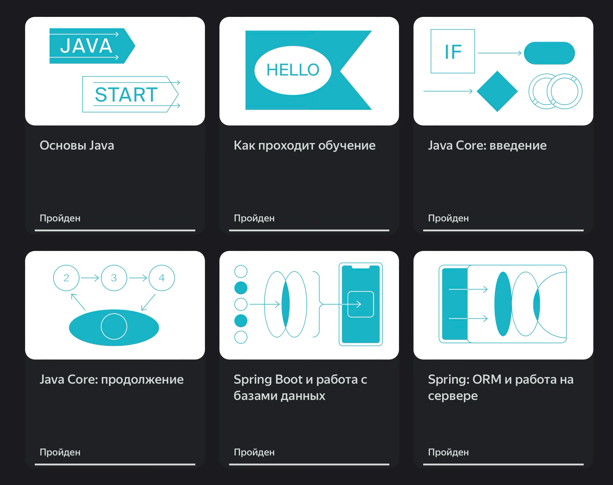

<section>
	<h2>Спринт 1</h2>
	<ul>
		<li>Сложные типы данных</li>
		<li>Циклы и массивы</li>
		<li>Числа и булевы значения</li>
		<li>IntelliJ IDEA</li>
	</ul>
	<aside class="notes">
		Сегодня мы подводим промежуточные итоги и вспоминаем ключевые темы, которые вы прошли.
		Это важный фундамент, на котором строится всё дальнейшее обучение. Давайте кратко пробежимся по
		каждой теме и разберём несколько дополнительных нюансов, которые помогут вам в реальной разработке.
		<br><br>
		Вы уже знаете, что в Java, помимо примитивных типов (int, boolean и т. д.), есть сложные
		(ссылочные) типы — классы, массивы, коллекции, строки (String).
		🔹 Строки в Java неизменяемы (immutable). Каждый раз, когда вы «изменяете»
		строку, на самом деле создаётся новый объект. Поэтому для частых операций со строками лучше
		использовать StringBuilder или StringBuffer.
		🔹 Понимание разницы между примитивами и ссылочными типами помогает избежать
		ошибок, связанных с копированием объектов и работой с памятью.
		<br><br>
		Вы научились работать с циклами (for, while, do-while) и массивами — одной из базовых структур данных.
		🔹 Массивы в Java имеют фиксированную длину. Если вам нужна динамически изменяемая структура,
		в будущем вы будете использовать ArrayList и другие коллекции.
		🔹 Если вам нужно перебрать массив или коллекцию, в большинстве случаев лучше использовать
		улучшенный цикл for (for-each), так как он лаконичнее и уменьшает шанс ошибок.
		<br><br>
		Казалось бы, простые вещи, но и здесь есть свои тонкости.
		🔹 Числа: Вы уже знаете про int, double и другие примитивы, но в Java есть ещё классы-обёртки
		(Integer, Double), которые позволяют работать с числами как с объектами (например, хранить их в коллекциях).
		🔹 В Java нет «трюков» с преобразованием чисел в boolean, как в некоторых других языках.
		Только true и false — это помогает избежать скрытых ошибок.
		<br><br>
		Вы познакомились с одной из самых мощных и популярных IDE для Java-разработки.
		Горячие клавиши (Alt + Enter — автоматическое исправление ошибок, Ctrl + Space — автодополнение).
		Встроенный отладчик — незаменимый инструмент для поиска ошибок.
		Рефакторинг (Shift + F6 — переименование, Ctrl + Alt + M — выделение метода).
		Заключение:

		Темы первого спринта — основа Java, и без них невозможно двигаться дальше.
		Если что-то осталось непонятным — самое время задать вопросы, потому что дальше будет ещё
		интереснее: ООП, исключения, работа с файлами и многое другое.

		Спасибо за внимание! Готовы ли вы перейти к следующему блоку? 😊

		(Пауза для вопросов, обсуждение.)

		(Общее время речи — около 5 минут, в зависимости от темпа.)
	</aside>
</section>
<section>
	<h2>Наш курс</h2>
	
	<aside class="notes">
		Эта задачка имеет прямое отношение к ФП1
		<a href="https://leetcode.com/problems/max-consecutive-ones/description/">https://leetcode.com/problems/max-consecutive-ones/description/</a>
		<pre><code class="java" data-trim>
			public int findMaxConsecutiveOnes(int[] nums) {
				int count = 0;
				int max = 0;
				for(int i=0; i nums.length; i++){
					if (nums[i] == 1){
						count++;
						if (count > max) max = count;
					}else{
						count = 0;
					}
				}
				return max;
			}
		</code></pre>

		Чем вы занимаетесь, какая профессия? Кто дальше всего от айти?
		<br><br>
		Курс условно можно поделить на две части — 2 модуля Core и 2 модуля Spring. В Core мы по шагам пройдем от основ — методов, классов и ООП до использования стандартных библиотек и принципов работы интернета.
		<br><br>
		Следующие два модуля посвящены самому популярному фреймворку Spring. Мы научимся создавать web api на спринге, подключать их к БД, а также собирать их в контейнеры для деплоя на сервер.
		<br><br>
		В конце вас ждет дипломный проект.
		<br><br>
		Также, на картинке представлен основной курс, у плюсов будет еще один модуль с другим наставником.
	</aside>
</section>
<section>
	<h2>Эволюция разработчика</h2>
	
	<aside class="notes">
		Вы уже знаете, что этот курс предназначен для того чтобы сделать из человека программиста уровня
		jun+ middle-. Как вы думаете, чем отличаются эти ступени — можно в чате, можно голосом.
		<br><br>
		Программисты сейчас называются не software developer, а software engineer. Потому что берут
		разработку приложений под ключ — помимо написания кода это деплой не сервера и мониторинг того,
		что ПО корректно работает.
	</aside>
</section>
<section>
	<h2>ФП1 Список покупок</h2>
	<ul>
		<li>Работаем в тренажере</li>
		<li>Пишем код только вместо точек <...></li>
		<li>Подсказки — на крайний случай</li>
		<li>Вопросы — поддержке на сайте</li>
	</ul>
	<aside class="notes">
		На первом спринтах мы занимаемся в тренажере, но потом будем сдавать проекты в виде кода
		сначала архивом, потом через Github.
		Изменяйте только плейсхолдеры в виде точек. Изменения в других частях кода могут сломать тренажер.
		Любые вопросы по тренажеру можно задавать поддержке на сайте.
		<br><br>
		Давайте с вами решим третью задачу из трех.
		<br><br>
		На экране будет код решения.
		Вы можете подглядывать в него при выполнении ДЗ, но очевидно, что самостоятельная работа
		гораздо эффективнее для вашего обучения. Потому что вам нужно научиться думать как разработчик.
		Попробуйте сделать сами.
		<br><br>
		<pre><code class="java" data-trim>
			if (productCount == currentListSize) {
				int newListSize = currentListSize * 2;
				String[] newShoppingList = new String[newListSize];
				for (int i = 0; i < currentListSize; i++) {
					newShoppingList[i] = shoppingList[i];
				}
				shoppingList = newShoppingList;
				currentListSize = newListSize;
			}
		</code></pre>
	</aside>
</section>
<section>
	<h2>Ваши вопросы</h2>
	<ul>
		<li>Сложные типы данных</li>
		<li>Циклы и массивы</li>
		<li>Числа и булевы значения</li>
		<li>IntelliJ IDEA</li>
		<li>ФП1</li>
	</ul>
</section>
